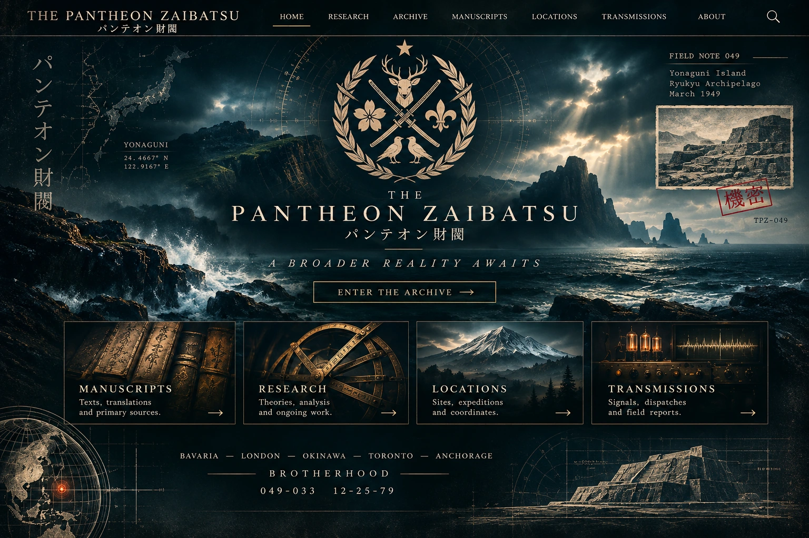

 MANUSCRIPTS
MANUSCRIPTS RESEARCH
RESEARCH LOCATIONS
LOCATIONS TRANSMISSIONS
TRANSMISSIONSBAVARIA — LONDON — OKINAWA — TORONTO — ANCHORAGE
BROTHERHOOD · 049-033 · 12-25-79
THE PANTHEON ZAIBATSU
THE ARCHIVE
A collection of manuscripts, accounts, records and transmissions whose relationship remains unresolved.
No matching records.
PRIMARY MATERIAL
THE MANUSCRIPTS
Twelve scrolls. One sealed vessel. A discovery recorded beneath an abandoned shrine in 1949.
THIRTY-THREE FEET BELOW
The excavation account describes a cavity beneath the northeastern corner of the shrine and an object that witnesses could not readily identify.
VIEW RELATED RECORDS →Translations and interpretations remain contested within the archive.
INTERPRETATIONS & INQUIRIES
RESEARCH
Perception. Time. Continuity. The limits of what can be observed—and the assumptions made in its absence.
THE TRISTIMULUS
An interpretation of the manuscripts proposes three neglected modes of perception: magnetoreception, telepathy and advanced temporal awareness.
EXPLORE THE RECORDS →These ideas belong to the Pantheon Zaibatsu fictional archive and are presented as in-world claims.
SITES & EXPEDITIONS
LOCATIONS
Places named in the record. Some documented. Others disputed. All connected by the question of what was found.
Bavaria · London · Okinawa · Toronto · Anchorage
DISPATCHES & SIGNALS
TRANSMISSIONS
Some messages are received long after they were sent. Others have no established point of origin.
THE VALLEY OF THE SHADOW
No active broadcast is connected to this page. Archived dispatches will appear here as the collection expands.
EXAMINE THE ARCHIVE →THE PANTHEON ZAIBATSU
ABOUT
The name has been attributed to a manuscript collection, a body of teachings, an organization and a destination. The archive does not resolve the distinction.
THE RECORD IS NOT COMPLETE.
This site is a living work of alternate-reality fiction, presenting its world through documents, accounts, artifacts and unresolved evidence.
ENTER THE ARCHIVE →